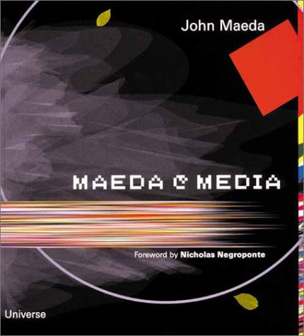
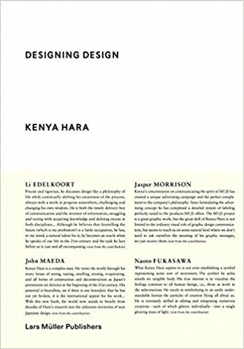
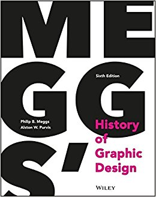
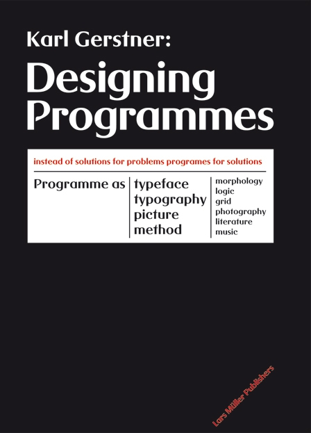
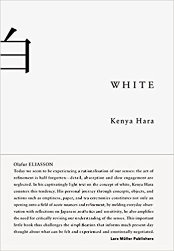

Unit 9 Process
Week 01 | 02.10.17 - 06.10.17
Developing a research project
How to take notes:
Literature review guidelines
1. Why am I reading this?
2. Summarise content in 1 sentence.
3. Find 3 main points and write 1 sentence about each.
4. What is the conclusion?
5. If I could ask the author 1 question, what would it be? (my critical response!)
Developing themes
Start a new list with the themes that have emerged from past reading.
Which themes are related to my project and how?
How are the themes related to each other?
What are the gaps in my research?
Week 03 | 16.10.17 - 20.10.17
What is evidence
Books + Notes
Maeda@Media
John Maeda

Computer science and math can serve as tools for creative expression. You can bridge these two opposing fields and create original, unexpected work.
The case studies of Maeda’s work serve as proof. He has a unique approach to creating images. He never creates a singular piece. He investigates a subject and creates behavioural model around that subject. For instance, he was curious as to how a pixel typeface would change if the grid were based on a circle instead of a square. He then tried to solve this problem by coming up with a range of solutions. I think this process can be called iterative.
I like that Maeda has managed to bridge or even create a new field of study. He is one of the pioneers whose footsteps I can trace in my uncertainty and tentative research goals.
Designing Design
Kenya Hara

The text is about Kenya Hara’s experience as a designer and a teacher. He talks about work by his colleagues, his students and his own. He uses it partly as proof of his concepts and theories, and partly as examples to demonstrate his thinking, way of working and creating design outcomes.
I think he is passing on the wisdom and experience he has accumulated over his life and extensive career. I think he is trying to convince the next generation of designers reading this to continue his work.
When creating work with digital media I often feel the outcome is clean and refined to certain degree but in the process a human quality and a certain amount of warmth is lost. I have experienced MUJI products and graphic design work by Kenya Hara and I have always felt the outcome is simplified to the most essential parts without losing any human quality. I felt researching Hara would perhaps give me insight into how to achieve this too.
Meggs' History of Graphic Design
Philip Meggs

Meggs’ documents in great detail and in an un-opinionated manner the most important events, work and designers starting with the Egyptians and hieroglyphics all the way to current events of graphic design history.
Personal summary of relevant history in timeline format.
Week 04-05 | 23.10.17 - 03.11.17
Joining the parts – structural integrity
Feedback on essay drafts
Jaap De Maat
You wanna look more at historical context.
- systematic thinking of Futurists, Dadaists and De Stijl with almost algorithmic methods of working.
- Moving into Jan Tschichold and The Swiss Style. Focus on ‘form follows functions’ and the relation with material, tools and methods.
Serial Art - 1960’s with the emergence of artists like Karl Gerstner and Sol Lewitt.
- The first noteworthy computer design tool was built by Ivan Sutherland in 1963.
- The user could manipulate geometric shapes on the screen by using a light-pen. Important because it was one of the first examples of a computatinal design tool.
- Xerox PARC was a research center established in 1971 as a research division of the Xerox Corporation. It’s widely famous for its contributions to computer science, which include the UI, the mouse, the laser printer, etc.
- Look into the design of these old interfaces and how they actually havent changed much over the years.
- The New Tendencies movement, first computers in art and design.
- The “New Tendencies” explored the use of the computer in the 1960’s and 1970’s in international exhibitions and the magazine “Bit International”.
-Some more names around this time working with computations art/design: Karl Reinhartz in 1962. Jose Maria Yturralde in 1972. Manuel Barbadilloin 1973.
- important milestone in computational art was the exhibition “The Reponsive Eye” held at MoMa in 1965. with work from: Josef Albers
-1980-1990: John Maeda wrote the influential books “Design by Numbers”, “Creative Code” and “Maeda@Media”.
Victoria Salmon
I suggest you move the focus of the paper from your personal practice towards ideas that have a more universal/general value - so what can we can gain from hybridisation of analogue and digital design tools, for example? Look again at your research question and see if you can broaden this more (currently it is very specific). Re-visit the existing research and see if you can re-work it so you writing moves from description to more analysis.
Make the research work for you. The ideas are there, they just need to become clearer and the structure needs to build from one point to the next. For example, clarifying the connection between 'anti-disciplinary' approach of MIT in this era of hyperspecialisation. And Ishii's work is again really interesting - how can you connect it more with what came before and what comes after in the structure of your argument?
Simplify your case studies so everything included helps to develop and inform and to root what has already been outlined before. For example, you make it clear why Gertner's work is important to you, (although you don't address why it seems to have fallen out of fashion with others). But I don't understand the connection/relevance of AI in this case study in relation to research question. So, it is about making the links.
Again with the Dorpel example, are you equating audience participation and the physical nature of the output as being the analogue component/traits? Perhaps then, you need to clarify this here.
Also, is the third case study there to show the changing skill set of designers and.... so....? Again, greater clarification of why it has been selected, in relation to the focus of research.
Now it is time to clarify the research question, focus on structure, tighten up the analysis and ensure you know why something falls within the general argument and why other information comes under the case studies.
Week 06 | 06.11.17 - 10.11.17
Integrating Practice
Books + Notes
Designing Programmes
Karl Gerstner

The book is a guide on how to solve complex, multi-dimensional problems. It documents some of the earliest usages of parametric design.
It emphasises to figure out what sort of characteristics the solution should exhibit and to solve for those in mind. This type of working is based of a methodology by Fritz Zwicky, an astrophysicist. There is an emphasis on mathematical tendencies, interest in permutations and repetition. Design is described as an imaginative use of rational processes. The creative process is inherently intellectual. There is no inspiration from a higher entity and there is no absolute solution. There is a brief discussion on the automation of design and “Modulor” by Le Corbusier is mentioned.
It discusses a programmatic way to solve for graphic design problems even before the first computer existed. It proves that we are not just adapting to machines and translating our problems so they can solve them but that the computer is based of our own scientific / logical / human way of approaching a complex problem to find all possible solutions.
White
Kenya Hara

Kenya Hara talks about his love for the colour white while exploring it’s philosophical, cultural meaning and origin.
properties. I think in his mind it does. Its’ origin is mystical as it only appears in very specific instances in nature. An example of such instances are eggs and bones. Both symbols closely related to birth and death, opposite ends of a life cycle. White symbolises emptiness to be filled. Thus it is a state of limitless potential and represent / creates space for our imagination to roam free. “Itself creates no meaning but only interpretation.” (p. 48) Hara also talks about his personal development as a graphic designer and migrating from the use of bold colours to an extremely clean, minimalist, almost monochromatic aesthetic. If he does use colour, then the particular shade he uses is steeped in cultural meaning and adds great significance to the final outcome. Only by controlling these differences does the work become more meaningful. The way we perceive the whiteness of white objects (read: paper) depends entirely on context. High contrast means higher noticeability.
He speaks of the importance of engaging the senses in graphic design pieces. This is largely what my project is about (see quote below). He reveres paper and I think this plays a large role in my project as I am comparing creating imagery on physical surfaces, such as paper, with digital media and screens. He has a knack for analysing situations very thoughtfully and coming up with brilliant design solutions for those particular situations. I like his approach and think it could be very closely related to programmatic design methodologies.
Creative Code
John Maeda

John Maeda has made the leap from programmer to designer to artist. In this book he recounts his experience as a teacher at the MIT Media Lab. He writes about his personal growth and journey while showcasing the art of his students.
The book is structured into multiple sections. It starts off with a preface by Red Burns the cofounder of the Interactive Telecommunications Program which is a graduate department focused on the study and design of new media, computational media and embedded computing under the umbrella of interactivity. The book continues with a chapter called resume, which recounts the personal history, development and work by Maeda. The chapters Space, Living, Type, Tool, Physical, Education and Beyond are themes Maeda used in his lessons and his students used as inspiration for their projects. There is heavy mention of the word physical computing. This seems to be a bit of a trend as multiple students of Maeda at MIT believe this will be a future area of focus in the future. Although there seems to be a bit of a discussion about whether the future practitioners will predominantly come from an engineering / software development field or a graphic / communication design or even product design field.
Week 07 | 13.11.17 - 17.11.17
Feedback from context tutor
Feedback on essay draft
Victoria Salmon
Why do designers need hybridised design tools?
Does this question relate to designers since the beginning of print, or is it specifically about current and/or future needs?
This is a very well written and presented piece, with clear reference to the research you’ve undertaken. The work that could be done to make it even tighter, is in linking clearly the research question with the responses you give.
The introduction, I think should establish exactly what the paper will be focusing on. Your current introduction has a focus on graphic design, whereas the discussion and case studies are much broader than this.
I didn’t understand your comment about it being easier nowadays to empathies with different viewpoints (page 2).
When you talk about the industrial revolution, what period were you thinking of?
Could it be that Ishii was imagining this utopian future not because he thought we might get there but as a way to allow us to shift our thinking? So, a form of speculative design thinking, if you like.
The first case study, whilst very interesting, doesn’t directly relate to the research question (in that it is aimed at everybody, not designers). Perhaps an introductory sentence, explaining your reasons for its inclusion would be useful.
Your response to the second case study is very interesting and I think your questions are valid and well put. Any indication, in your research, to the audience’s reaction to the work, including the users who had given feedback?
Third case study: Clearly Gerstner’s work is highly influential but you make big claims for it. As I understand it, Alvarez is arguing that the logic used in programming languages on computers today is based on Gerstner’s work. Is this what you are saying?
The concept of right brain/creative is very popular but also disputed. See ted talk by Elizabeth Walters.
You choose to think Maeda is right and that we need to always keep one step ahead of the machine or lose our jobs and careers. Perhaps then, we don’t need hybridised design tools but hybridized design minds?
Week 08 | 20.11.17 - 24.11.17
Refining work